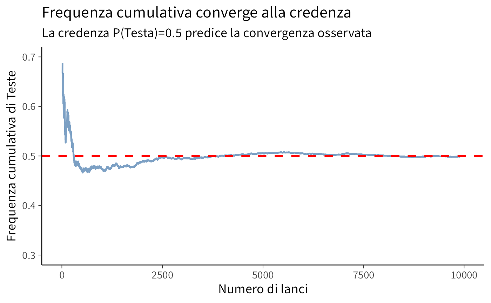

1 Interpretazione bayesiana della probabilità
Introduzione
In questo capitolo esploreremo la probabilità da una prospettiva bayesiana, concependola fin dall’inizio come un grado di credenza razionale piuttosto che come una proprietà fisica degli eventi o una frequenza limite. Questa visione, profondamente radicata nei lavori di Thomas Bayes, Pierre-Simon Laplace e Bruno de Finetti, offre una base concettualmente coerente per affrontare l’incertezza nella ricerca psicologica.
Scopriremo che gli assiomi della probabilità non sono “leggi naturali” della casualità, ma vincoli di coerenza logica tra le nostre credenze. Quando violiamo questi vincoli, le nostre assegnazioni di probabilità diventano contraddittorie e ci espongono a situazioni paradossali (il famoso “Dutch Book”). Le simulazioni al computer, che utilizzeremo ampiamente, non definiranno cosa sia la probabilità, ma illustreranno come credenze coerenti si comportano quando vengono verificate empiricamente.
Panoramica del capitolo
- La probabilità come grado di credenza razionale.
- Incertezza epistemica e ontologica.
- L’argomento della coerenza: Dutch Book e scommesse eque.
- Cenni storici alla tradizione bayesiana.
- Simulazioni come strumento di verifica (non di definizione).
1.1 Casualità e incertezza
David Spiegelhalter, in un recente articolo pubblicato su Nature, sottolinea come la vita sia pervasa dall’incertezza: non sappiamo con certezza cosa è accaduto in passato, cosa avverrà in futuro né abbiamo una completa comprensione di ciò che ci circonda (Spiegelhalter, 2024). Questa condizione di ignoranza spinge a interpretare la casualità come un modello che, pur non fornendo previsioni deterministiche, rivela spesso utili regolarità statistiche.
Tuttavia, è fondamentale distinguere tra due concezioni di probabilità:
- Ontologica: la probabilità come proprietà intrinseca del mondo fisico (es. “la moneta ha probabilità 0.5 di dare testa”).
- Epistemica: la probabilità come misura della nostra incertezza e del nostro grado di credenza (es. “dato ciò che so, assegno probabilità 0.5 all’evento testa”).
In questo corso adotteremo fin dall’inizio la prospettiva epistemica, che considera la probabilità non come una caratteristica del mondo, ma come una quantificazione razionale della nostra incertezza data l’informazione disponibile.
1.2 Due tipi di incertezza: epistemica e ontologica
Prima di procedere, è utile distinguere due fonti di incertezza che affrontiamo quando studiamo fenomeni complessi:
Incertezza epistemica
Dipende dai limiti della nostra conoscenza o dai dati a disposizione. Se in un esperimento non si controllano adeguatamente variabili importanti, la nostra valutazione probabilistica risente di queste lacune. L’incertezza epistemica può ridursi affinando il disegno sperimentale, ampliando il numero di osservazioni, o acquisendo nuove informazioni rilevanti.Incertezza ontologica
Inerente al fenomeno stesso, è indipendente dal grado di controllo o di osservazione possibile. Il lancio di un dado rimane imprevedibile nel singolo caso anche se conoscessimo le leggi fisiche in gioco e le condizioni iniziali con incredibile precisione. Questo tipo di casualità è connaturato al sistema.
Nel quadro bayesiano, tuttavia, anche ciò che potremmo chiamare “incertezza ontologica” viene modellato come incertezza epistemica: non abbiamo accesso completo allo stato del sistema, quindi quantifichiamo la nostra ignoranza con probabilità. Come osservò Laplace, una mente che conoscesse tutte le forze della natura e la posizione di ogni particella non troverebbe nulla di incerto: per essa, passato e futuro sarebbero ugualmente determinati. La probabilità nasce quindi dalla nostra conoscenza limitata.
1.3 Probabilità come grado di credenza
1.3.1 La visione bayesiana soggettivista
Nel paradigma bayesiano, assegnare una probabilità a un evento significa esprimere un grado di fiducia razionale nel verificarsi di quell’evento, dato tutto ciò che sappiamo. Questo approccio, sviluppato da Bruno de Finetti, Frank Ramsey e altri, considera la probabilità come intrinsecamente soggettiva ma non arbitraria.
Probabilità = grado di credenza (plausibilità) assegnato a un’affermazione, dato lo stato dell’informazione.
Aspetti chiave di questa definizione:
- Soggettività: persone diverse, con informazioni diverse, possono assegnare probabilità diverse allo stesso evento.
- Razionalità: le probabilità devono rispettare vincoli di coerenza logica (gli assiomi).
- Condizionalità: ogni probabilità è implicitamente condizionata all’informazione disponibile.
- Aggiornabilità: quando acquisiamo nuove informazioni, aggiorniamo le nostre probabilità in modo sistematico.
1.4 L’argomento della coerenza: Dutch Book
Se la probabilità è soggettiva, come possiamo giustificare gli assiomi matematici che la governano? La risposta viene dall’argomento del Dutch Book, proposto da Bruno de Finetti.
1.4.1 Probabilità come scommessa equa
Bruno de Finetti propose un modo concreto e intuitivo per pensare alla probabilità: immaginala come la tua disposizione personale a scommettere su un evento.
1.4.1.1 Cosa significa nella pratica?
Quando dici “la probabilità che piova domani è del 70%” (P(pioggia) = 0.7), secondo de Finetti stai implicitamente dicendo che:
Se ti proponessi questa scommessa:
- Paghi 0.70 euro per un “biglietto”;
- Se piove domani, ricevi 1 euro;
- Se non piove, ricevi 0 euro;
…tu saresti indifferente tra accettare o rifiutare questa scommessa. La consideri una scommetta equa, né a tuo vantaggio né a tuo svantaggio.
1.4.1.2 Cosa sono le “quote” in questo contesto?
Nel linguaggio delle scommesse, la quota rappresenta il prezzo che paghi per avere diritto a una vincita potenziale. Nell’esempio della probabilità del 70%, una quota 0.7 significa che paghi 0.70 euro per ogni euro che potresti vincere.
Quando l’evento si verifica, il tuo guadagno netto sarebbe di 0.30 euro, calcolato come 1 euro di vincita meno 0.70 euro investiti. Quando invece l’evento non si verifica, perderesti completamente i 0.70 euro che avevi investito nella scommessa.
1.4.1.3 Perché proprio 0.7 è il prezzo equo?
Per comprendere perché 0.7 rappresenta il prezzo equo, immagina di ripetere questa stessa scommessa molte volte nel tempo. Nel 70% dei casi, corrispondenti alle situazioni in cui piove realmente, guadagneresti 0.30 euro. Nel restante 30% dei casi, quando non piove, perderesti 0.70 euro. Sul lungo periodo, questi guadagni e perdite tenderebbero a bilanciarsi perfettamente, dimostrando l’equità di questa quota.
La formula matematica che esprime questo concetto è:
Prezzo equo = Probabilità × Vincita + (1-Probabilità) × PerditaApplicandola al nostro esempio otteniamo:
Prezzo equo = 0.7 × 1 euro + 0.3 × 0 euro = 0.70 euroIn termini più formali, questa espressione corrisponde al concetto di valore atteso, che può essere rappresentato come:
\[ \text{Prezzo equo} = P(A) \times 1 + (1-P(A)) \times 0 = P(A). \]
In sintesi, possiamo affermare che la probabilità che assegni a un evento equivale esattamente al prezzo massimo che saresti disposto a pagare per avere diritto a vincere 1 euro nel caso in cui quell’evento si verifichi realmente.
1.4.2 Dutch Book: quando le credenze sono incoerenti
Un Dutch Book è una combinazione di scommesse che garantisce una perdita certa, indipendentemente dall’esito degli eventi. Se le nostre assegnazioni di probabilità violano gli assiomi della probabilità, qualcuno può costruire contro di noi un Dutch Book.
1.5.8 Gli assiomi di Kolmogorov come vincoli di coerenza
Gli assiomi di Kolmogorov non sono leggi naturali, ma requisiti minimi per evitare contraddizioni:
Non negatività: \(0 \le P(A) \le 1\).
Una probabilità negativa o maggiore di 1 non ha senso come grado di credenza.Normalizzazione: \(P(\Omega) = 1\).
Siamo certi che “qualcosa accade” nello spazio delle possibilità.-
Additività: Per eventi disgiunti \(A \cap B = \varnothing\),
\[P(A \cup B) = P(A) + P(B).\]La credenza che si verifichi \(A\) oppure \(B\) è la somma delle credenze separate.
Questi vincoli garantiscono che le nostre credenze siano internamente consistenti e non ci espongano a Dutch Books.
1.6 Verifica della coerenza con R
Possiamo facilmente verificare se un’assegnazione di probabilità è coerente usando R.
1.6.1 Esempio 1: Eventi mutuamente esclusivi incoerenti
#> Somma delle credenze: 1.2
#> ⚠️ Incoerenza: la somma supera 1 per eventi mutuamente esclusivi.
#> Rischio di Dutch Book!1.6.2 Esempio 2: Simulazione di scommessa con prezzo equo
Simuliamo una scommessa su un evento \(A\) a cui assegniamo \(P(A) = 0.7\).
set.seed(123)
p_A <- 0.7
n_scommesse <- 100000
# Simuliamo esiti "compatibili" con la credenza p_A
A_occurs <- rbinom(n_scommesse, size = 1, prob = p_A)
# Payoff di un biglietto prezzato al valore di credenza
ticket_price <- p_A
payoff <- A_occurs * 1 - ticket_price
cat("Valore atteso del payoff:", mean(payoff), "\n")
#> Valore atteso del payoff: 0.00087
cat("Deviazione standard:", sd(payoff), "\n")
#> Deviazione standard: 0.458Interpretazione: Con un prezzo pari alla credenza, il valore atteso del payoff è vicino a zero. Se fissassimo un prezzo incoerente (es. 0.9 con credenza 0.7), il valore atteso diventerebbe negativo: staremmo sovrapagando l’evento in base alla nostra stessa credenza.
# Prezzo incoerente
ticket_price_wrong <- 0.9
payoff_wrong <- A_occurs * 1 - ticket_price_wrong#> Con prezzo incoerente 0.9:
#> Valore atteso del payoff: -0.199
#> Perdita attesa per scommessa: 0.1991.7 Cenni storici: la tradizione bayesiana
La teoria della probabilità ha radici nel XVII secolo con i lavori di Pascal e Fermat sui giochi d’azzardo. Tuttavia, l’interpretazione bayesiana si sviluppò in una tradizione parallela.
1.7.1 Thomas Bayes (1701-1761)
Il reverendo Thomas Bayes sviluppò quello che oggi chiamiamo il teorema di Bayes, pubblicato postumo nel 1763. Il suo contributo fondamentale fu riconoscere che possiamo invertire il ragionamento probabilistico: partendo da osservazioni, possiamo aggiornare razionalmente le nostre credenze su cause o parametri non osservati.
1.7.2 Pierre-Simon Laplace (1749-1827)
Laplace sviluppò e generalizzò il lavoro di Bayes, applicando l’inferenza probabilistica a problemi scientifici. La sua visione della probabilità come “buon senso ridotto a calcolo” anticipò la moderna interpretazione epistemica.
“La probabilità è relativa in parte all’ignoranza, in parte alla conoscenza.”
– Pierre-Simon Laplace
1.7.3 Bruno de Finetti (1906-1985)
De Finetti fornì le basi filosofiche moderne della probabilità bayesiana soggettivista. La sua famosa affermazione “la probabilità non esiste” significa che la probabilità non è una proprietà del mondo, ma uno strumento per quantificare incertezza.
Sviluppò l’argomento del Dutch Book e il concetto di scambiabilità, dimostrando che molti risultati classici (come la legge dei grandi numeri) possono essere derivati senza assumere probabilità “oggettive”.
1.7.4 Harold Jeffreys (1891-1989)
Jeffreys, nel suo influente Theory of Probability (1939), propose l’approccio “obiettivo” bayesiano, usando prior non informativi basati su principi di invarianza. Dimostrò l’utilità dell’inferenza bayesiana in geofisica e altre scienze.
1.7.5 La rinascita moderna
Dopo un periodo di eclissi dovuto al dominio della statistica frequentista (Fisher, Neyman-Pearson), l’approccio bayesiano ha conosciuto una rinascita negli anni ’90 grazie:
- alla potenza computazionale (MCMC, Stan, JAGS);
- a nuovi testi divulgativi (Gelman, McElreath, Kruschke);
- all’applicazione in machine learning e AI.
1.8 Il ruolo delle simulazioni: illustrazione, non definizione
Una differenza cruciale rispetto all’approccio classico è il ruolo delle simulazioni e della Legge dei Grandi Numeri (LLN).
1.8.1 L’approccio frequentista (da evitare)
Nell’approccio frequentista, si definisce la probabilità come:
\[ P(A) = \lim_{n \to \infty} \frac{\text{numero di volte che A si verifica}}{n}. \]
La LLN garantisce che le frequenze relative convergano a questo limite. In questa visione:
- la probabilità è una proprietà oggettiva;
- le simulazioni “misurano” la probabilità;
- la convergenza definisce cosa sia la probabilità.
1.8.2 L’approccio bayesiano
Nella prospettiva bayesiana:
- la probabilità è un grado di credenza assegnato prima di qualsiasi osservazione;
- le simulazioni verificano che credenze coerenti producono frequenze attese;
- la LLN spiega perché frequenze empiriche convergono alla credenza, ma non definiscono la credenza.
1.8.3 Simulazione come verifica di coerenza
Usiamo le simulazioni per:
- verificare che credenze coerenti producono dati attesi,
- illustrare concetti come convergenza e variabilità,
- confrontare modelli probabilistici con dati empirici,
non per definire cosa sia la probabilità.
1.8.4 Esempio: Lancio di moneta rivisitato
set.seed(42)
# Assegno credenza P(Testa) = 0.5 per simmetria epistemica
p_testa_credenza <- 0.5
# Simulazione: verifico che questa credenza è coerente
n_lanci <- 10000
risultati <- rbinom(n_lanci, 1, p_testa_credenza)
# Frequenza cumulativa
freq_cumulativa <- cumsum(risultati) / seq_along(risultati)
# Grafico
df <- data.frame(
lancio = seq_along(risultati),
freq = freq_cumulativa
)
ggplot(df, aes(x = lancio, y = freq)) +
geom_line(alpha = 0.7) +
geom_hline(yintercept = p_testa_credenza,
linetype = "dashed", color = "red", size = 1) +
labs(
title = "Frequenza cumulativa converge alla credenza",
subtitle = "La credenza P(Testa)=0.5 predice la convergenza osservata",
x = "Numero di lanci",
y = "Frequenza cumulativa di Teste"
) +
ylim(0.3, 0.7)
Interpretazione bayesiana: Abbiamo assegnato \(P(\text{Testa}) = 0.5\) per simmetria epistemica (nessuna ragione per favorire testa o croce). La simulazione verifica che questa credenza è coerente con la LLN: le frequenze convergono al valore atteso. Ma la probabilità 0.5 non è definita dalla convergenza—è stata assegnata prima, e la convergenza la conferma.
1.9 Prima introduzione all’aggiornamento bayesiano
1.9.1 Teorema di Bayes: dal concetto al test diagnostico
Il teorema di Bayes descrive come aggiornare una credenza iniziale \(P(H)\) sull’ipotesi \(H\) alla luce di una nuova evidenza \(E\):
\[ P(H \mid E) = \frac{P(E \mid H) , P(H)}{P(E)}. \]
Significato dei termini:
| Simbolo | Nome | Interpretazione generale |
|---|---|---|
| \(P(H)\) | prior | Credenza iniziale nell’ipotesi |
| \(P(E \mid H)\) | verosimiglianza | Quanto è probabile osservare \(E\) se \(H\) è vera |
| \(P(E)\) | evidenza | Probabilità complessiva di osservare \(E\) |
| \(P(H \mid E)\) | posterior | Credenza aggiornata in \(H\) dopo aver visto \(E\) |
1.9.1.1 Applicazione: il test diagnostico
Nel caso di un test medico, la struttura è identica, ma i simboli assumono un significato concreto:
| Formula generale | Corrispondenza nel test diagnostico |
|---|---|
| \(H\) | “Il paziente ha la malattia” (\(D\)) |
| \(\neg H\) | “Il paziente non ha la malattia” (\(\neg D\)) |
| \(E\) | “Il test è positivo” (\(+\)) |
| \(P(H)\) | \(P(D)\): prevalenza (probabilità a priori di essere malato) |
| \(P(E \mid H)\) | \(P(+ \mid D)\): sensibilità |
| \(P(E \mid \neg H)\) | \(P(+ \mid \neg D)\): tasso di falsi positivi |
| \(P(H \mid E)\) | \(P(D \mid +)\): probabilità di essere malato dopo un test positivo |
Usando la notazione precedente, la formula di Bayes diventa:
\[ P(D \mid +) = \frac{P(+ \mid D) \, P(D)} {P(+ \mid D) \, P(D) + P(+ \mid \neg D) \, P(\neg D)}. \]
1.9.2 Esempio numerico
Supponiamo che:
- la prevalenza della condizione sia \(P(D\) = 0.10);
- la sensibilità del test sia \(P(+ \mid D\) = 0.80);
- la specificità sia \(P(- \mid \neg D) = 0.90\), quindi \(P(+ \mid \neg D) = 0.10\).
Vogliamo sapere: dopo un test positivo, qual è la probabilità di avere la malattia?
# Parametri del test
p_D <- 0.10 # Prevalenza = prior P(D)
sens <- 0.80 # Sensibilità = P(+ | D)
spec <- 0.90 # Specificità = P(- | ~D)
p_pos_given_notD <- 1 - spec # Falsi positivi P(+ | ~D)
# Probabilità complessiva di test positivo
p_pos <- sens * p_D + p_pos_given_notD * (1 - p_D)
# Teorema di Bayes: posterior
p_D_given_pos <- (sens * p_D) / p_pos
cat("P(D) =", p_D, "\n")
#> P(D) = 0.1
cat("P(D | +) =", round(p_D_given_pos, 3), "\n")
#> P(D | +) = 0.4711.9.3 Interpretazione passo per passo
- Prima del test: credenza iniziale = prevalenza = 10%.
- Dopo un test positivo: la credenza aggiornata sale a 47%.
- Nonostante la buona sensibilità e specificità, resta una forte incertezza: su 100 test positivi, circa 53 sono falsi positivi.
1.9.4 Riepilogo concettuale
\[ \underbrace{P(D)}_{\text{prior}} \quad \xrightarrow[\text{aggiornamento con } P(+|D), P(+|\neg D)]{\text{osservazione del test positivo}} \quad \underbrace{P(D \mid +)}_{\text{posterior}} \]
Il teorema di Bayes mostra che la probabilità finale non dipende solo dalla qualità del test, ma anche da quanto la malattia era plausibile a priori. In termini psicologici, è il modello formale del ragionamento inferenziale: integrare l’informazione nuova con le conoscenze precedenti in modo coerente.
1.9.4.1 Visualizzazione con una tabella di contingenza
Per rendere concreto il ragionamento, immaginiamo una popolazione di 1000 persone.
- Il 10% (cioè 100 persone) ha la malattia.
- L’80% di queste (80 persone) risulterà positivo: veri positivi.
- Il 90% delle persone sane (900 persone) risulterà negativo, quindi il 10% (90 persone) darà un falso positivo.
| Stato reale / Esito del test | Positivo | Negativo | Totale |
|---|---|---|---|
| Malato \(D\) | 80 | 20 | 100 |
| Sano \(¬D\) | 90 | 810 | 900 |
| Totale | 170 | 830 | 1000 |
Tra i 170 test positivi, solo 80 appartengono a persone realmente malate.
\[ P(D \mid +) = \frac{80}{170} \approx 0.47. \]
Lo stesso valore ottenuto con la formula di Bayes.
1.9.5 Codice R per la simulazione e la tabella
# Parametri del test
p_D <- 0.10 # Prevalenza = prior P(D)
sens <- 0.80 # Sensibilità = P(+ | D)
spec <- 0.90 # Specificità = P(- | ~D)
p_pos_given_notD <- 1 - spec # Falsi positivi P(+ | ~D)
# Calcolo per 1000 persone
N <- 1000
malati <- N * p_D
sani <- N * (1 - p_D)
veri_positivi <- malati * sens
falsi_negativi <- malati * (1 - sens)
falsi_positivi <- sani * p_pos_given_notD
veri_negativi <- sani * spec
tabella <- data.frame(
`Stato reale` = c("Malato (D)", "Sano (¬D)", "Totale"),
`Positivo` = c(veri_positivi, falsi_positivi, veri_positivi + falsi_positivi),
`Negativo` = c(falsi_negativi, veri_negativi, falsi_negativi + veri_negativi),
`Totale` = c(malati, sani, N)
)
tabella
#> Stato.reale Positivo Negativo Totale
#> 1 Malato (D) 80 20 100
#> 2 Sano (¬D) 90 810 900
#> 3 Totale 170 830 10001.9.6 Interpretazione visiva
La tabella mostra da dove viene il 47%:
- su 170 test positivi, 80 sono veri positivi e 90 falsi positivi;
- quindi, anche con un test buono, la maggioranza dei positivi può risultare non malata se la prevalenza è bassa.
1.9.7 Sintesi concettuale
| Quantità | Formula | Valore | Significato |
|---|---|---|---|
| \(P(D)\) | 0.10 | Prevalenza (prior) | |
| \(P(+ \mid D)\) | 0.80 | Sensibilità | |
| \(P(+ \mid \neg D)\) | 0.10 | Falsi positivi | |
| \(P(D \mid +)\) | 0.47 | Probabilità aggiornata (posterior) |
Conclusione: Il teorema di Bayes ci permette di passare dal livello astratto delle probabilità condizionate alla rappresentazione concreta delle frequenze. Questa doppia lettura – formale e intuitiva – è ciò che rende Bayes uno strumento potente per comprendere come la mente (o un sistema razionale) aggiorna le credenze alla luce di nuove evidenze.
Questa è l’essenza del ragionamento bayesiano: aggiornamento sistematico e razionale delle credenze alla luce di nuove evidenze.
1.10 Il ruolo della probabilità nello studio dei fenomeni psicologici
La teoria della probabilità bayesiana fornisce un framework particolarmente adatto per la psicologia:
1.10.1 1. Quantificare l’incertezza diagnostica
Nella pratica clinica, raramente abbiamo certezze assolute. La probabilità bayesiana permette di:
- quantificare l’incertezza sulle diagnosi;
- integrare informazioni da test multipli;
- considerare esplicitamente la prevalenza (tasso base);
- comunicare l’incertezza in modo trasparente.
1.10.2 2. Modellare processi cognitivi
La mente umana sembra operare secondo principi bayesiani:
- percezione: integrare prior (aspettative) con input sensoriali;
- apprendimento: aggiornare credenze con esperienze;
- decisione: bilanciare evidenze incerte.
Modelli bayesiani del ragionamento spiegano bias cognitivi come deviazioni da ottimalità bayesiana.
1.10.3 3. Analizzare dati sperimentali
L’inferenza bayesiana offre vantaggi metodologici:
- incorporare conoscenze pregresse (studi pilota, letteratura);
- quantificare evidenza a favore dell’ipotesi nulla;
- gestire naturalmente piccoli campioni;
- propagare l’incertezza attraverso modelli complessi.
1.10.4 4. Decisioni cliniche
In contesti terapeutici, l’approccio bayesiano aiuta a:
- valutare l’efficacia di trattamenti personalizzati;
- aggiornare protocolli con evidenze emergenti;
- bilanciare rischi e benefici sotto incertezza;
- ottimizzare sequenze di interventi.
1.11 Confronto con l’approccio frequentista
È utile chiarire le differenze fondamentali tra i due paradigmi:
| Aspetto | Frequentista | Bayesiano |
|---|---|---|
| Probabilità | Frequenza limite in infinite repliche | Grado di credenza dato lo stato d’informazione |
| Parametri | Fissi ma ignoti | Variabili casuali con distribuzioni |
| Inferenza | Proprietà di procedure ripetute | Aggiornamento di credenze |
| Prior | Non esistono | Essenziali, quantificano conoscenza pregressa |
| Incertezza | Intervalli di confidenza | Intervalli di credibilità (probabilistici) |
| P-value | P(dati | H₀ vera) |
| Interpretazione | Frequenza ipotetica | Plausibilità diretta |
Riflessioni conclusive
In questo capitolo abbiamo introdotto la probabilità come grado di credenza razionale anziché come frequenza relativa o proprietà fisica. Questo approccio, radicato nella tradizione di Bayes, Laplace e de Finetti, offre diversi vantaggi per lo studio della psicologia:
Coerenza concettuale: gli assiomi sono vincoli di coerenza logica, non leggi empiriche da “scoprire” tramite esperimenti.
Applicabilità generale: possiamo assegnare probabilità a eventi singoli, non ripetibili (es. “questo specifico paziente risponderà al trattamento?”).
Trasparenza: le assunzioni (prior) sono esplicite e possono essere discusse e giustificate.
Dinamicità: l’aggiornamento bayesiano formalizza come apprendere dall’esperienza.
Naturalità: modella il ragionamento umano sotto incertezza in modo più diretto.
Nei prossimi capitoli svilupperemo gli strumenti formali (assiomi, eventi, probabilità condizionata) sempre mantenendo questa prospettiva epistemica. Vedremo che anche concetti apparentemente “oggettivi” come l’equiprobabilità derivano in realtà da simmetrie nella nostra informazione, non da proprietà intrinseche del mondo.
La probabilità bayesiana non elimina l’incertezza—la quantifica e la gestisce razionalmente. È questo il suo grande valore per la ricerca psicologica, dove l’incertezza è la regola, non l’eccezione.